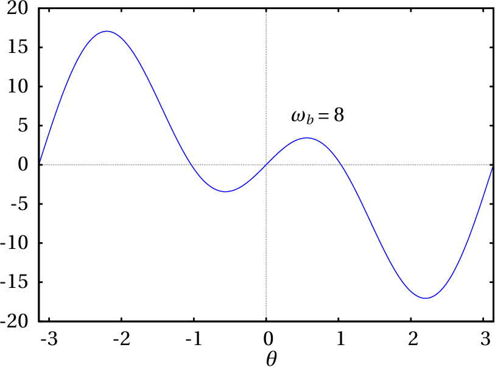
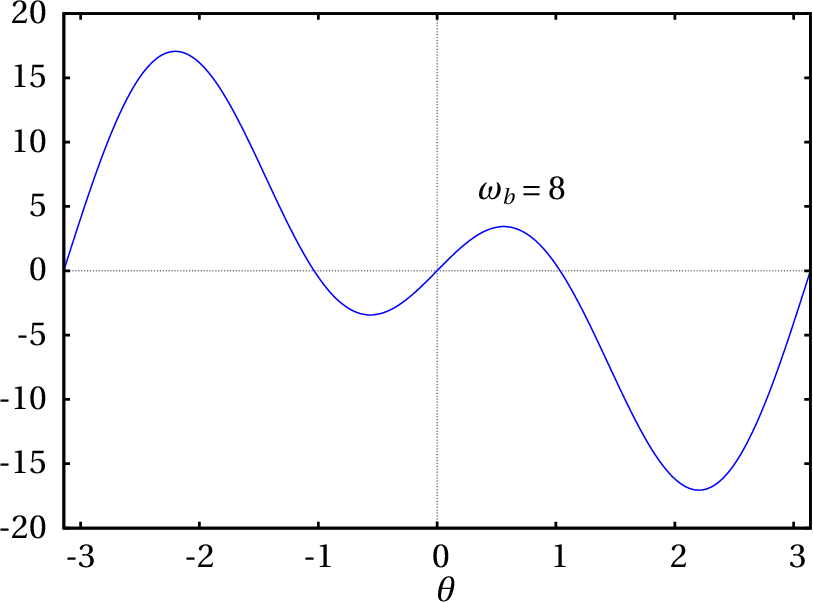
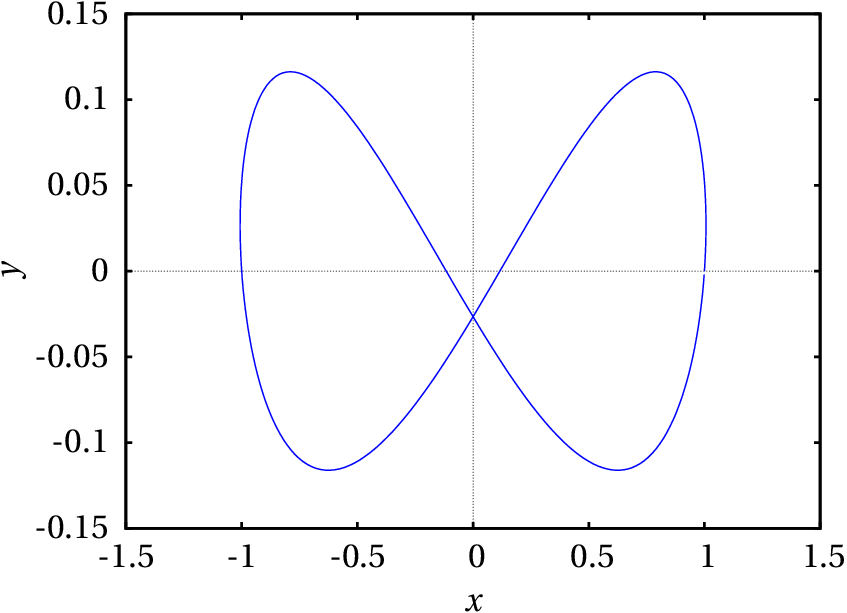
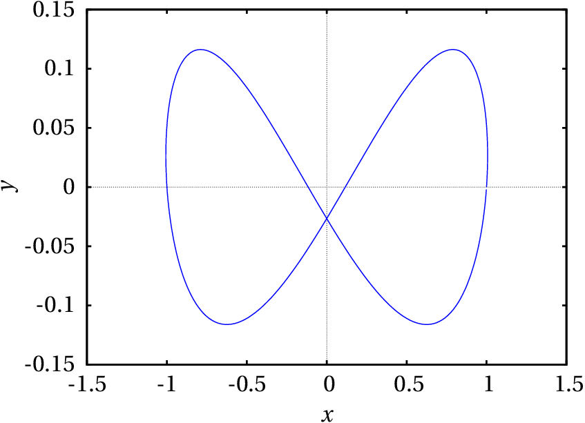

A hoverboard has just one axle with two wheels. The person riding it can rotate around that axle as in a pendulum. A pendulum has two equilibrium positions, one where its center of gravity is directly below its axis, and in the other its center of gravity is directly above the axis. The person riding the hoverboard is in that second equilibrium position, which is unstable; if the center of gravity moves slightly out of the vertical that passes through the axle, the weight will make the rider move even further away from that vertical, falling frontwards or backwards. The hoveboard has an automatic control system that makes it move forward or backward, thus bringing the center of gravity back to the equilibrium position. A pendulum like that, oscillating around the stable equilibrium position by means of an external force, is called an inverted pendulum. Other examples of inverted pendulums are a Segway and a mono-cycle.
Let us consider a continuous dynamical systems with two state variables:
each of the functions and can be expanded as a Taylor series, in the neighborhood of a point ( , ) in phase space:
where the index can be 1 or 2. If the point ( , ) is an equilibrium point, then and, therefore, the first term of the two series is null. Changing the origin of coordinates to the equilibrium point ( , ), that is, in a new coordinate system: , , the first two terms in the series expansion of the functions are,
Which is a linear combination of the new variables and , where the constants multiplying the two variables are the values of the partial derivatives at the equilibrium point ( , ). Substituting these approximations into the system 10.1, we obtain a linear system ( e , because and are constants).
this linear approximation is valid only in a neighborhood of the origin ( , ), namely, for and near the equilibrium point ( , ).
The square matrix in equation 10.4 is called Jacobian matrix, represented here by . Substituting the coordinates ( , ) of the equilibrium point in the Jacobian matrix gives a constant matrix. At each equilibrium point, a different matrix is obtained which defines a linear system that approximates the nonlinear system in a neighborhood of the equilibrium point. The eigenvalues and eigenvectors of each of these matrices can be used to analyze the stability of the system near each equilibrium point, in the same way that it is done for linear systems.
Classify the equilibrium points and plot the phase portrait of the system:
Resolution. It has already been shown in the example 7.2 of Chapter 7 that this system has four equilibrium points. Let us save the functions and and the equilibrium points in two Maxima lists:
It is also convenient to define another list with the names of the state variables:
The jacobian matrix, with two rows and two columns, is obtained using Maxima's command jacobian, which requires two lists, with the functions and the variables names.
Substituting the coordinates of each equilibrium point, we obtain the matrices of the linear systems that approximate the nonlinear system in the vicinity of its equilibrium points. For example, at the first equilibrium point,
In order to study the stability of the system in the vicinity of this equilibrium point, let us compute the eigenvalues of this matrix.
The result shows 4 lists; the first list are the eigenvalues, the second list are their multiplicities and the last two lists are the eigenvectors corresponding to the two eigenvectors.
At this equilibrium point, the eigenvalues are real, with opposite signs; we then conclude that it is a saddle point. The fourth equilibrium point is also saddle point:
At the second equilibrium point we have:
Since the eigenvalues are complex, with the negative real part, the equilibrium point is an attractive (stable) focus. Similar calculations for the third equilibrium point show that it is also a focus, but repulsive (unstable), because the real part of the eigenvalues is positive. The phase portrait is created using the command:
Figure 10.1 shows the result. There is a single stable equilibrium point, an attractive focus, at ( , ) = (1,265, −0.7746). The other 3 equilibrium points are unstable: two saddle points and a repulsive focus. The two evolution curves shown near the repulsive focus at ( , ) = (−1.265, 0.7746) and their continuation until the saddle points delimit the stability region. When the initial state of the system is in that region, the final state will approach the stable equilibrium point.

Figure 10.2: Pendulum.
The kind of pendulum that we will study in this section consists of an object connected to a rigid bar crossed by a fixed horizontal axis (Figure 10.2). This type of pendulum can rotate in a vertical plane making complete turns. The system has a single degree of freedom, , which is the angle that the bar makes with the vertical. Let us set when the pendulum is in the lowest position and in its highest position. The angular velocity is and the speed of the center of mass is where is the distance from the center of mass to the axis.
The kinetic energy of the pendulum is:
Where is the total mass and is the moment of inertia with respect to the center of mass. According to the parallel axes theorem 5.23, is the moment of inertia with respect to the axis of the pendulum, which can be written as , where is the radius of gyration relative to the axis. Therefore, the kinetic energy can be written as
The gravitational potential energy is (setting zero energy at )
Ignoring the air resistance, the Lagrange equation leads to the equation of motion:
where defines the effective length of the pendulum. In the particular case of a simple pendulum , in which the mass of the bar is negligible and the disk is very small, equals the distance from the center of the dist to the axis (see example 8.5 in Chapter 8 ).
The evolution equations are obtained by writing the derivative of as the angular velocity and the angular acceleration as the derivative of the angular velocity:
These nonlinear equations can only be solved approximately using some numerical approximation. The Maxima program rk can be used to obtain the numerical solution by the fourth-order Runge-Kutta method. That program requires 4 input parameters: a list with the expressions for the components of the phase velocity, a list with the names of the state variables, a list with initial values for those variables and a range of values for the independent variable, including the name of the variable, its initial value, its final value and the length of the steps to be taken from the initial to the final value. The output of rk is a list of points that approximate the solution; each point will have the coordinates of the independent variable, followed by the values of the state variables at that point.
For example, for a pendulum with effective length of 50 cm, released from rest at an initial angle of 30°, the approximate solution is obtained with the following command ( and stand for and ):
The plots of and vs time and the evolution curve in phase space are obtained with the following commands:
The two plots are shown in Figure 10.3.
Looking at the list of values obtained for , one can conclude that the period of oscillation is between 1.44 and 1.45 s. The plots in Figure 10.3 are very similar to the plots for a simple harmonic oscillator. If the initial angle is bigger, this similarity begins to disappear. For example, Figure 10.4 shows the results obtained with an initial angle of 120°.
In this case the period of oscillation is between 1.94 and 1.95 s, which is bigger than in the case of 30° amplitude.
In the two cases shown in Figures 10.3 and 10.4, the evolution curve is a cycle, which implies the existence of a stable equilibrium point inside the cycle.
The equilibrium points of the pendulum, where the right sides of equations 10.9 are zero, occur at , , … and .
The points at , , … are actually the same physical point, corresponding to the pendulum passing through its lowest position after making some complete turns. The points at , … are also the same physical point, at the highest position of the pendulum.
The Jacobian matrix obtained from the equations 10.9 of the pendulum is
At the equilibrium point in (in general, 0, , ,…), the matrix is:
which is the matrix of a simple harmonic oscillator, discussed in Example 9.4 of Chapter 9. Its two eigenvalues are , so the equilibrium point at is a center and if the initial state of the system is close to that point, the pendulum oscillates with angular frequency . In the case of the 50 cm pendulum considered in the previous section, this expression leads to a period of 1.42 s. Remember that this value is only an approximation, which becomes better the smaller the amplitude; the period values obtained in the previous from a numerical solution of the equations section are more accurate.
In the neighborhood of the equilibrium point at (in general, , ,…), the Jacobian becomes
which is the matrix of an inverted oscillator, discussed in Example 9.3 of Chapter 9. The two eigenvalues are and the equilibrium point is a saddle point (unstable equilibrium).
The phase portrait in the domain will show 3 centers ( , 0 and ) and 4 saddle points ( , , and ). For the cm pendulum we can plot the phase portrait with the command:
Figure :10.5 shows the result. The angle is in the horizontal axis and the angular velocity is in the vertical axis. The two curves identified with the letters A and B form part of a heteroclinic orbit.

The heteroclinic orbits of the pendulum correspond to the case when the mechanical energy of the pendulum is exactly equal to the gravitational potential energy at the point of maximum height. Since we are using as reference , at the position where the pendulum bar is horizontal ( ), the potential energy at the highest point is . Each of the curves A and B represent the motion starting with the pendulum nearly at rest and very near its highest position, descending and completing a full turn back to the highest position, without further oscillation. The difference between the heteroclinic orbits and cycles is that in cycles the oscillations repeat indefinitely, whereas in a heteroclinic orbit there is a single oscillation.
All the evolution curves in the region of phase space inside the heteroclinic orbit are cycles. Those which are closer to the heteroclinic orbit correspond to oscillations in which the pendulum almost reaches its highest point, it seems to stop there for a few moments and then moves down again to the lowest point, repeating the same motion on the other side of the vertical.
The heteroclinic orbits are also separatrices, because they separate the phase space into a region where the pendulum oscillates —the region shaded in figure 10.6— and a region where the pendulum keeps rotating in the same direction.

Figures 10.3 and 10.4 show that with a 30° amplitude the linear approximation is quite good, since the evolution curve is very similar to that of the simple harmonic oscillator and the period is close to the period obtained with the linear approximation, but with amplitude of 120°, the linear approximation is no longer accurate.
In autonomous mechanical systems, for each degree of freedom there is an equation of motion, which implies two state variables. Thus, the dimension of the phase space is twice the number of degrees of freedom. If a system is not autonomous the phase space has one more dimension, as shown in the following section. Thus, the number of dimensions of the phase space for a mechanical systems can be 2, 3, 4, 5, …
In cases when the phase space has more than two dimensions the plotdf program can not be used to show the phase portrait. It is necessary to solve the evolution equations for some specific initial values which can then be used to plot some of the state variables.
The general form of a system with non-autonomous differential equations is:
Each possible state of the system is characterized by the values of the variables and time ; therefore, each state is a point with coordinates ( , ,…, , ) and the phase space has dimensions. The components of the phase velocity are the derivatives of the coordinates of the state: ( , ,…, , ). The expressions for the first components are given by the system of differential equations and the last component is always equal to 1 (derivative of with respect to ). Hence, a non-autonomous system with equations is a dynamical system with state variables.
Such systems of equations can also be solved with the rk program, without having to include among the state variables, nor the last component of the phase velocity, ; the initial value of is given to rk in the integration interval and not in the list of initial values for the state variables. However, it must be remembered that is also a state variable in the cases when the phase velocity depends on it.
The differential equation:
is called Bessel. equation. Write the equation as a dynamic system and identify its phase space.
Resolution. We regard as another variable :
so the second derivative is equal to the first derivative of and the Bessel equation becomes:
solving for we get,
Since this is not an autonomous equation, we consider the independent variable as another state variable, with the trivial evolution equation:
The phase space has three dimensions ( , , ). The corresponding dynamical system is defined by 3 equations 10.13, 10.14 and 10.15.

Figure 10.7: Projectile in the air.
As a projectile moves through the air, three external forces act on it: its weight, , the air resistance, and the upward buoyant force , where is the mass of the projectile and the mass of air displaced by the projectile. This problem is similar to the free fall studied in section 4.3.3 of chapter 4 , but the resistance of the air is no longer vertical (see figure 10.7). The weight and the buoyant force are vertical, in opposite directions, and can be combined into a single vertical force (effective weight) with magnitude .
In the case of projectiles with density much larger than the density of the air, the effective weight is very close to the weight of the projectile . In any case, the mass of the projectile is usually measured by measuring its effective weight in the air, so the measured value ( ) of the projectile mass is really and the effective weight is .
The force of resistance of the air, being opposite to the velocity of the projectile, points in different directions at different points of the trajectory. As was explained in Chapter 4, in the case of air the Reynolds number is usually high and we can assume that the air resistance is proportional to the square of the velocity. If the projectile is a sphere of radius , the magnitude of is given by equation 4.14 and the expression of the force is:
where is the air density and is the tangential vector pointing in the direction of the velocity vector:
Choosing a system of axes in which gravity points in the negative direction of the axis and the initial velocity with which the projectile is launched is in the plane, the weight and the force of air resistance are always in the plane and the projectile's trajectory will be on that plane. Thus, the velocity vector is and the air resistance force is:
The weight vector is . Newton's second law leads to the acceleration components:
These equations must be solved simultaneously because the two components and appear in the two equations. We can find a numerical approximation to the solution.
Let us compare obtain the trajectories of two different spheres, launched with the same initial velocity, and compare them with the parabolic trajectory they would have followed in vacuum, without air resistance. Consider the case where the initial velocity is 12 m/s, at an angle of 45° above the horizontal; the components of the initial velocity are,
Starting with the easiest case, launching the projectile in vacuum, the acceleration components are and . The state of the projectile is ( , , , ) and the components of the phase velocity are ( , , , ). The components of the initial velocity have already been computed in (%i19) and let us assume the projectile is launched from the origin, so the initial values for and are zero. To integrate the equations of motion from to s, with time increments of 0.01 s, we use the command:
and the last point in the list tr1 is,
The 5 components of that point are time, position coordinates, and velocity components. This result shows that at the ball is already falling, because is negative, and it has already dropped below the initial height, because is also negative.
In order to obtain the trajectory until the ball returns to the initial height , it is necessary to extract only the points from list tr1 with third positive component ( ). We can scan the entire list comparing the third element of each point with 0 until we find the first point where that element is negative. This can be achieved with Maxima's command sublist_indices:
The command lambda was used to define an operator that compares the third element of the input given to it with zero. The sublist_indices command goes through the tr1 list, passing each element as input to that operator and when that operator produces the result "true", the index of current list element is appended to a sublist. The command first selects only the first element in that sublist, in this case the index of the first point where is negative. As such, only the first 174 points on the list are of interest; since our goal is to plot the trajectory, we extract the coordinates and of the first 174 points into another list:
We will now repeat the same steps for a tennis ball and a ping-pong ball, taking into account the resistance of the air. The density of the air is approximately 1.2 kg/m3. It is convenient to define a function that returns the constant that appears in the equations of motion 10.19, for given values of the radius and the mass of a ball; and we also define the expression of the magnitude of the velocity so as not to have to write it several times:
A typical tennis ball has a radius of approximately 3.25 cm and mass 62 grams. In the command (%i20) it is necessary to replace the acceleration of gravity by the two acceleration components (equations 10.19)
The first point with negative height is
and we save the trajectory of the tennis ball in another variable:
The same steps are repeated for a typical ping-pong ball of radius 1.9 cm and mass of 2.4 g
The plot of the 3 trajectories is made with the following command:
The result is shown in Figure 10.8 .
The trajectories of the balls in the air are not parabolas because they curve more at the end, ending with a more vertical drop. The effect of air resistance is more visible on the ping-pong ball; although it is smaller than the tennis ball, the air resistance slows it more, due to its lower density. Launched with the same velocity, the horizontal ranges of the ping-pong and tennis balls are 6.2 m and 12.4 m. The hypothetical horizontal range of the two balls, if air resistance could be eliminated, would be 14.7 m.

Figura 10.9: Wilberforce
pendulum.
A Wilberforce pendulum (Fig. 10.9) consists of a cylinder that hangs from a very long vertical spring. When a spring is stretched or compressed, each turn changes slightly in size; in the Wilberforce pendulum, the large number of turns in the spring makes this change more visible; thus, as the spring oscillates up and down, it also winds or unwinds leading to rotation of the cylinder around its vertical axis.
This system has two degrees of freedom, the height of the center of mass of the cylinder and the angle of rotation of the cylinder, . If and are set in the equilibrium position, it is possible to ignore the gravitational potential energy that can be eliminated from the equations with a change of variables (see problem 4 in Chapter 9). The elastic potential energy has 3 terms, which depend on the elongation of the spring and its angle of rotation . The kinetic and potential energies are,
where , and are elastic constants of the spring. Lagrange equations, ignoring air resistance and other dissipative forces, lead to the following equations of motion:
To solve the evolution equations numerically, it is necessary to give some typical values for the mass, the moment of inertia and the elastic constants,
The solution in the time interval from 0 to 40, with initial conditions cm and the other variables equal to 0, is obtained with the following command:
Figure 10.10 shows the plot obtained for the angle and the elongation , multiplied by a factor of 100 so that it is visible on the same scale of the angle.

The graph shows an interesting feature of the Wilberforce pendulum: if the pendulum is made to oscillate without rotating, the amplitude of the linear oscillation decreases gradually, while the cylinder begins to rotate with torsional oscillation that reaches a maximum amplitude when the cylinder stops moving vertically. The amplitude of the torsional oscillation then begins to diminish as the linear oscillation grows again. This intermittence between vertical displacement and rotation repeats itself indefinitely.
The projection of the phase portrait in the and plane is shown in Figure 10.11.

This system has two angular frequencies. The longitudinal angular frequency and the torsion angular frequency,
The cylinder in a Wilberforce pendulum usually has four nuts that can be displaced, increasing or decreasing the moment of inertia, to make the two frequencies very similar and the alternating effect between linear and rotational oscillations more visible. The values that we used for the parameters were chosen to guarantee two equal frequencies.
(To check your answer, click on it.)


Questions: 1. D. 2. A. 3. C. 4. D. 5. E.
Problems
 (b) A saddle point at (
,
) = (0, 0), an unstable focus
at (
,
) = (-1, 0) and a stable focus at (
,
) = (1, 0).
(b) A saddle point at (
,
) = (0, 0), an unstable focus
at (
,
) = (-1, 0) and a stable focus at (
,
) = (1, 0). 

| Angle | Range (m) |
| 35° | 6.293 |
| 36° | 6.299 |
| 37° | 6.301 |
| 38° | 6.299 |
| 39° | 6.325 |
| 40° | 6.314 |

 



(click to continue)
(click to continue)
(click to continue)
(click to continue)
(click to continue)
(click to continue)
(click to continue)
(click to continue)
(click to continue)
(click to continue)
(click to continue)
(click to continue)
(click to continue)
(click to continue)
(click to continue)
(click to continue)
(click to continue)
(click to continue)
(click to continue)
(click to continue)
(click to continue)
(click to continue)
(click to continue)
(click to continue)
(click to continue)